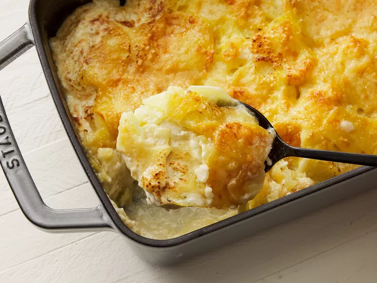

Potatoes Au Gratin

Description
This recipe for au gratin potatoes with Gruyère makes the easiest,
cheesiest, most delicious potatoes I have ever had. Yum!
Ingredients
- 3 pounds Yukon Gold potatoes, peeled and very thinly sliced
- 3 cloves garlic, minced
- 1 cup heavy cream, divided
- freshly ground black pepper to taste
- freshly grated nutmeg to taste
- 2 cups freshly shredded Gruyere cheese, divided
- ¾ teaspoon salt
How to make Potatoes au Gratin
- Preheat the oven to 350 degrees F (175 degrees C).
-
Place potatoes, garlic, and salt into a large pot; fill with enough
water to cover. Bring to a boil; reduce heat to medium and simmer
potatoes until tender but not mushy, 8 to 10 minutes. Use a slotted
spoon to transfer about half the potatoes into a 9x13-inch baking dish.
-
Pour 1/2 of the cream over the potatoes and season with black pepper and
nutmeg; sprinkle 1/2 of the Gruyère cheese on top. Layer the remaining
potatoes on top and season with black pepper and nutmeg. Pour over
remaining cream and sprinkle with remaining Gruyère cheese.
-
Bake in the preheated oven until cheese is golden brown on top, about 1
hour.
Home